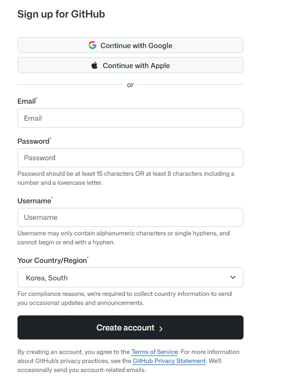
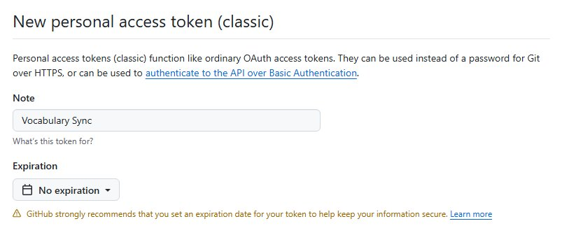
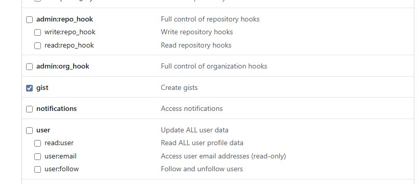
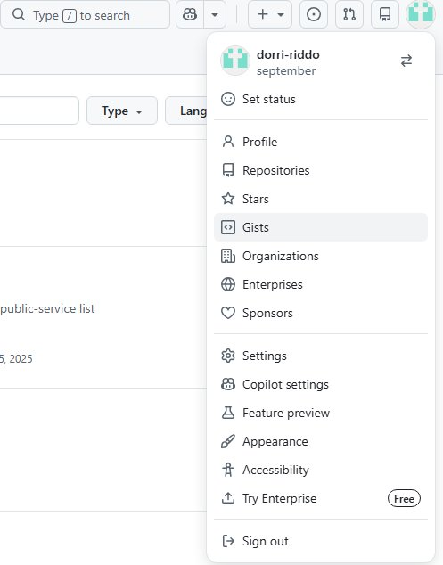
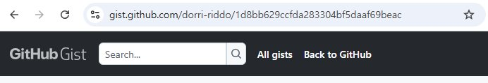

단어장 동기화 설정 가이드
단어장 동기화 기능을 사용하려면 GitHub 계정이 필요합니다. 이미 계정이 있다면 다음 단계로 넘어가세요.
github.com/signup에 접속합니다.
이메일, 비밀번호, 사용자명을 입력하거나 간편 가입을 통해 계정을 생성합니다.

GitHub 회원가입 화면
아래 링크를 클릭해 토큰 생성 페이지로 이동합니다:
Note에는 자유롭게 입력해 주세요.
Expiration은 No expiration (무기한)으로 설정하는 것을 추천합니다.

토큰 이름과 만료 기한 설정
권한(Scopes) 목록에서 gist 항목만 체크합니다.
다른 권한은 모두 체크 해제 상태로 두세요.

페이지 하단의 Generate token 버튼을 클릭합니다.
생성된 토큰(ghp_으로 시작)을 반드시 복사해 둡니다.
단어장 메인 화면에서 ⚙️ 동기화 설정 버튼을 누릅니다.
GitHub Personal Access Token 입력란에 앞서 복사한 토큰을 붙여넣습니다.
저장 버튼을 누릅니다.
자동으로 Gist(저장소)가 생성되고, 동기화가 시작됩니다.
핸드폰과 PC 등 여러 기기에서 같은 단어를 사용하려면 Gist ID가 필요합니다.
⚙️ 동기화 설정을 열면 Gist ID가 표시됩니다. 복사 버튼을 누릅니다.
또는 GitHub에서 직접 확인할 수도 있습니다:
GitHub 우측 상단 프로필 아이콘 → Your gists를 클릭합니다.

프로필 메뉴에서 "Gists" 클릭
Gist를 클릭하면 주소창에 Gist ID가 표시됩니다.
URL에서 가장 마지막에 있는 긴 문자열이 Gist ID입니다.

현재 이미지의 경우에는 주소창 마지막에 있는 1d8bb629ccfda283304bf5daaf69beac가 Gist ID
두 번째 기기에서 단어장을 열고 ⚙️ 동기화 설정을 누릅니다.
같은 토큰을 입력하고, 기존 Gist ID 입력란에 복사한 ID를 붙여넣습니다.
저장을 누르면 자동으로 데이터가 동기화됩니다.
+ 새 단어 추가 버튼을 누른 뒤, 단어와 동의어(쉼표로 구분)를 입력하고 저장합니다.
단어 카드를 클릭하면 상세보기가 열립니다. 상단의 수정 또는 삭제 버튼을 사용하세요.
ㄱ~ㅎ 탭을 눌러 해당 초성으로 시작하는 단어만 모아서 볼 수 있습니다.
검색창에 입력하면 단어명과 동의어를 모두 검색합니다. "전체 검색" 또는 "현재 탭에서만" 검색 범위를 선택할 수 있습니다.
단어 상세보기에서 이 단어를 참조하는 다른 단어와, 관련 단어까지 자동으로 표시됩니다. 클릭하면 해당 단어로 바로 이동합니다.
동기화 설정에서 "동의어를 자동으로 단어로 등록" 옵션을 켜면, 동의어를 입력할 때 해당 동의어가 자동으로 새 단어로 등록되고 양방향 연결이 만들어집니다.
📥 백업 내보내기를 누르면 모든 단어 데이터가 JSON 파일로 다운로드됩니다.
📤 백업 가져오기를 누르고 이전에 내보낸 JSON 파일을 선택하면 데이터가 복원됩니다.
GitHub 토큰은 생성 직후에만 확인 가능합니다. 잃어버린 경우 기존 토큰을 삭제하고 새로 생성하면 됩니다. 단어장의 데이터는 Gist에 그대로 남아 있으므로, 새 토큰과 기존 Gist ID를 입력하면 복구됩니다.
데이터는 GitHub의 Secret Gist에 저장됩니다. Secret Gist는 URL을 아는 사람만 접근할 수 있으며, 공개 목록에 노출되지 않습니다. 토큰이 유출되지 않도록 주의하세요.
인터넷 연결 없이도 마지막으로 동기화된 데이터가 브라우저에 저장되어 있어 읽기가 가능합니다. 하지만 새 단어를 추가하거나 수정하려면 동기화 설정과 인터넷 연결이 필요합니다.